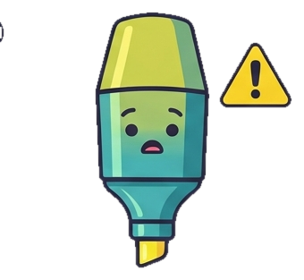

¿Eliminar ?
La lectura activa es una forma de leer en la que no solo marcas texto, sino que decides qué rol juega cada fragmento mientras lees: ¿es un tema nuevo? ¿una idea a seguir? ¿un argumento? ¿un dato que respalda algo? Esa clasificación —parecida a técnicas como las notas Cornell o el método SQ3R— es lo que convierte un resaltado en comprensión real: en vez de subrayar todo del mismo color y olvidar por qué, cada nota queda archivada con sentido, lista para reconstruirse como apuntes de investigación.